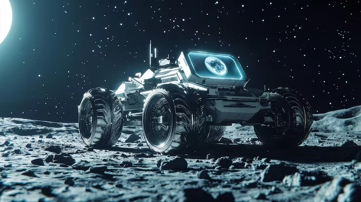

Romaric Pradeau
Je suis Roboticien
Profil
Je suis une personne très passionnée et créative. Hors des cours, je bricole, invente ou construis divers matériels électroniques.
J’apprends beaucoup en autodidacte, surtout dans le domaine de l’informatique où je maîtrise de nombreux langages de programmation comme le Java, Python, le langage C, Matlab, etc.
En plus de cela, je cherche toujours à améliorer mes créations ou à rénover d’anciennes machines, en y insérant de nouvelles technologies comme l’IA, et en automatisant le système.
Je suis également très curieux et j’aime découvrir de nouvelles choses, ce qui me pousse à toujours chercher à comprendre le fonctionnement des objets qui m’entourent.

Romaric Pradeau — Automaticien & Roboticien
Étudiant en Master Automatique et Robotique (2025). Expériences en automatisme industriel, robotique et maintenance. Compétences en programmation embarquée, intégration mécatronique et mise en service.
Contact
- Téléphone : 06 65 13 57 98
- Email : pradeau.romaric@proton.me
- Localisation : Clermont‑Ferrand, France
Formation
- Master Automatique & Robotique — 2025 (en cours)
- Licence Sciences Pour l'Ingénieur — 2024‑2025 (mécatronique)
- DUT GEII — 2022‑2024 (Automatisme / Informatique Industrielle)
Compétences
Technique
- Automatisme industriel : Siemens, Schneider
- Robotique : Fanuc, Stäubli, Kuka
- Programmation embarquée : C, C++
- Électronique : capteurs, actionneurs, électronique de puissance
Outils & Méthodes
- CAO : SolidWorks, Catia, NX (Siemens)
- Réseaux industriels : Modbus, Ethernet industriel
- Tests & mesure : oscilloscope, multimètre, bancs de test
- Gestion de versions : Git & GitHub
Langages & Dév
- Python, Java, C/C++
- Shell Linux, outils de build (Make, CMake)
Savoir‑être
- Travail en équipe, communication technique
- Rigueur, documentation et respect des procédures
- Autonomie et apprentissage rapide
CV complet : Télécharger le CV (PDF)
Formation
Master Automatique et Robotique
2025 (en cours)
Formation universitaire avancée axée sur la modélisation des systèmes dynamiques, la commande robuste, la vision artificielle, la perception multi-capteurs (LiDAR, caméras, odométrie) et l'intelligence artificielle appliquée à la robotique autonome.
Licence Sciences Pour l'Ingénieur
2024-2025
Parcours mécatronique
Durant cette année, j'ai consolidé mes compétences en électronique (analogique et numérique), capteurs et actionneurs, automatisme industriel. J'ai mené des projets intégrant conception de cartes (sur banc de test), asservissements et interfaces utilisateur, et utilisé des outils de CAO et de mesure. Cette formation m'a également permis de développer mon sens du travail en équipe, ma rigueur expérimentale et la rédaction de documents techniques.
Grâce au parcours mécatronique, j’ai pu confirmer mes motivations à poursuivre mes études dans ce domaine d'ingénierie multidisciplinaire.
DUT Génie Électrique et Informatique Industrielle (GEII)
2022-2024
Parcours Automatisme et Informatique Industrielle
J’ai pu acquérir de nombreuses compétences en électronique et automatisme, ce qui a suscité mon intérêt pour la mécatronique. Ma participation au concours national FANUC m’a permis de concrétiser mon expérience de la robotique et de la commande numérique industrielle.
Durant ce DUT, j'ai consolidé des compétences pratiques en électronique de puissance, en asservissements et automates programmables industriels (API). J'ai programmé sur systèmes embarqués (C/C++), réalisé des montages et effectué des mesures avec oscilloscope et multimètre. Les travaux pratiques et projets m'ont familiarisé avec les réseaux industriels (Modbus, Ethernet industriel), la mise en service, le diagnostic et les règles de sécurité électrique.
Expérience Professionnelle
Expérience en Industrie & Électricité
Électricien dans le Tertiaire
Début juillet à début août 2025
J’ai participé à la modernisation des installations électriques d’un collège en remplaçant les anciens luminaires par des LED et en installant un système de gestion DALI. Mes missions incluaient le tirage de câbles, la mise en conformité des circuits, et la configuration d’un éclairage intelligent. Ce projet a permis d’améliorer l’efficacité énergétique tout en respectant les normes et les délais.
Compétences clés : Maîtrise des normes électriques, installation de systèmes LED/DALI, rigueur et travail en équipe.
- Employeur : PJ2M ELECTRICITE (Lempdes, 63370)
- Contrat : Intérim (ALL RH, Clermont-Ferrand, 63000)
Électricien : Monteur de Câble sur chantier
Mai à juin 2025
J’ai assuré le tirage de câbles (puissance et informatique) sur un chantier de grande surface, en respectant les plans et les normes en vigueur. Mes missions incluaient la pose de chemins de câbles, le repérage des trajets et la collaboration avec les autres corps de métier pour garantir une installation sécurisée et fonctionnelle.
Compétences clés : Maîtrise des techniques de tirage de câbles, lecture de plans techniques, respect strict des normes de sécurité chantier, coordination inter-équipes.
- Entreprise : IB ELECTRIQUE (Gerzat, 63360)
- Contrat : Intérim (ALL RH, Clermont-Ferrand, 63000)
Automaticien — PI System Automation
Juillet-Août 2024
À la suite de mon stage, j’ai poursuivi ma collaboration avec l’entreprise en tant qu’automaticien pour finaliser le projet et assurer la mise en service chez le client. J’ai été responsable de la configuration et du réglage des automates, ainsi que des tests fonctionnels pour valider la conformité des systèmes. J’ai également formé les utilisateurs et résolu les problèmes techniques sur site.
Compétences clés : Programmation et diagnostic automates et IHM, analyse et résolution technique sur site, relationnel client, normes de sécurité.
- Lieu : Romagnat (63540)
- Contrat : Intérim (ACTO, Riom, 63200)
Stagiaire Automaticien — PI System Automation
Avril-Juillet 2024
Stage d'application en tant qu’automaticien : réalisation de simulations et tests en atelier pour valider le fonctionnement des systèmes automatiques, et rédaction de la documentation technique associée (procédures, schémas, rapports).
- Lieu : Romagnat (63540)
- Contrat : Stage conventionné
Expérience en Restauration
Pizzaiolo en Camping
Fin juin à fin août 2023
Gestion complète de la production et du service des pizzas. Préparation des ingrédients, confection à la demande et gestion de la cuisson dans un contexte de forte affluence. Coordination avec l'équipe de salle et respect rigoureux des règles d'hygiène et des stocks/DLC.
Compétences clés : Gestion des flux en période d’affluence, respect strict des normes HACCP, réactivité et adaptabilité.
- Employeur : Camping Huttopia (Cazaubon, 32150)
- Contrat : CDD Saisonnier
Second de Cuisine — Auberge de la Gargouille
Fin juin à fin août 2022
En appui au chef de cuisine : préparation des plats, contrôle qualité des préparations, gestion des stocks et respect rigoureux des DLC dans un environnement exigeant.
- Lieu : Saint-Amant-Tallende (63420)
- Contrat : CDD Saisonnier
Plongeur & Aide Cuisine — Auberge de la Gargouille
Fin juin à fin août 2021
Entretien et désinfection approfondie des espaces de production culinaire, gestion des déchets, tri sélectif et assistance au rangement des approvisionnements en respectant les normes d'hygiène.
Compétences clés : Rigueur, endurance, sens aigu de l’organisation et réactivité en équipe.
- Lieu : Saint-Amant-Tallende (63420)
- Contrat : CDD Saisonnier
J’ai saisi l’opportunité de multiplier les expériences professionnelles, souvent sous forme de missions courtes ou saisonnières, afin de découvrir concrètement le monde du travail tout en poursuivant mes études. Ces expériences m’ont permis d’acquérir une diversité de compétences pratiques, de me familiariser avec les exigences et les rythmes du milieu professionnel, et de financer mes projets personnels et académiques. Cette approche m’a offert une immersion progressive dans la vie active, tout en me permettant de concilier travail et formation pour construire un parcours à la fois riche et équilibré.
Projets
Grâce aux opportunités offertes par mon institut de formation ainsi qu’à l’accompagnement d’associations, j’ai pu concrétiser plusieurs projets qui ont marqué mon développement personnel et professionnel. Ces expériences m’ont permis d’acquérir des compétences variées, de renforcer mon autonomie et de m’engager dans des initiatives technologiques concrètes.
Concours FANUC
Automatisation et pilotage CNC d'une sertisseuse industrielle de cadres de fenêtres (6e prix national).
Concours Olympiade Physique
Projet expérimental et démarche scientifique appliquée primés lors du concours des Olympiades.
Robot suiveur de ligne
Robot mobile autonome suiveur de trajectoire avec capteurs infrarouges et asservissement PID.
Maintenance de moteur (VR)
Application immersive de maintenance et de simulation du fonctionnement moteur en Réalité Virtuelle.
Rénovation maquette machine industrielle
Rétrofit complet, recâblage et programmation d'une maquette pédagogique industrielle.
Maquette tourelle balistique
Conception mécatronique, vision OpenCV et asservissement Pan & Tilt d'une tourelle balistique.
Mini robot humanoïde
Prototypage mécatronique, cinématique directe et asservissement multi-servomoteurs.
Projet de Synthèse — Brodeuse Numérique CNC
Rétrofit mécatronique d'une machine à coudre en brodeuse CNC 2 axes synchronisée par capteur optique.
Pipeline de Pré-traitement VGGT (Stage M1)
Extraction multi-capteurs (ROS 2), filtrage cinématique odométrique, correction optique de Mei et sélection LoFTR pour VGGT sur navette autonome.
Robot humanoïde
Projet complet de robot humanoïde : mécatronique, asservissement dynamique et IA embarquée.